A Cobrabuilt to order.
Two to four cars on the floor at any one time — built, sold, serviced and moved out of the Midwest.
02 / Inventory
Four cars, not four hundred.
View all inventory
Midwest holds two to four Cobras at any one time. Each one gets the room a car like this needs — shown at the size you would stand in front of it, not shrunk into a grid cell.
-
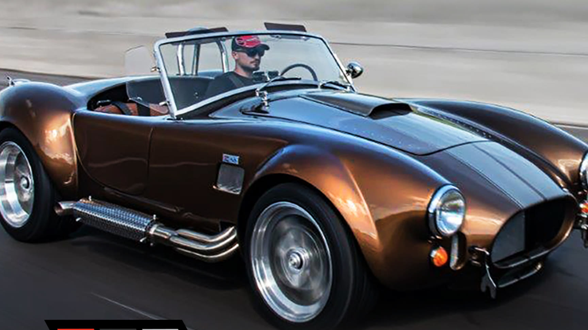
Lot 01 · Available
RT4 Classic Edition
- Price
- From $66,900
- Wheels
- 18 in wheels
- Pipes
- Ceramic-coated side pipes
-
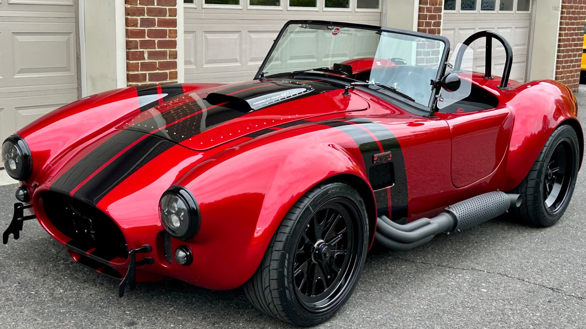
Lot 02 · Available
RT4B Black Edition
- Price
- From $70,500
- Wheels
- Matte black, 18 in
- Pipes
- Ceramic-coated black roll bars
03 / Build
Yours is not built yet.
Every car leaves this shop specified by the person who is going to drive it. Colour, stance, pipes, the stitching on the seat you will actually sit in — the list below is the conversation, in the order it happens.
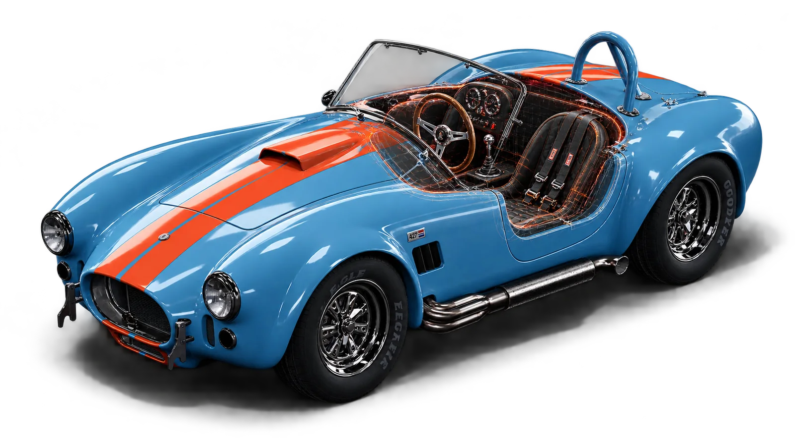
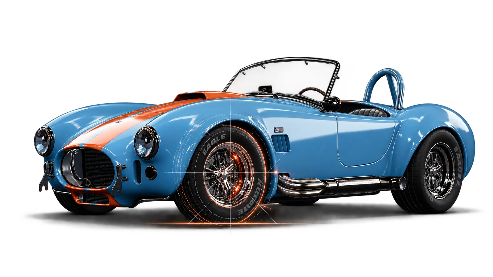
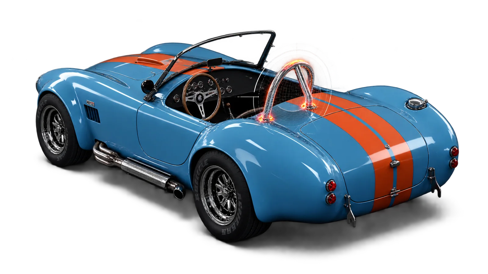
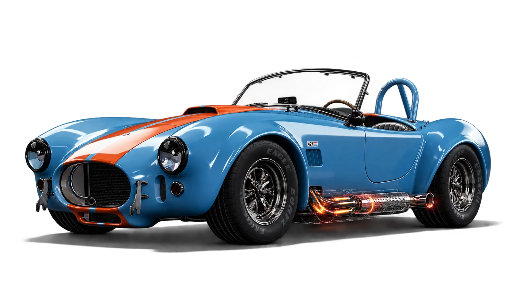
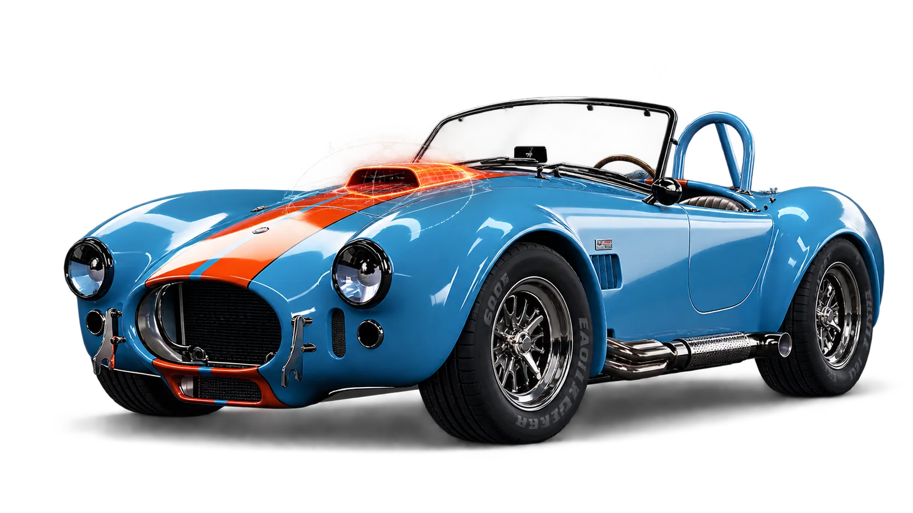
-
01
Model
RT4 Classic or RT4B Black. Everything below follows from this one.
-
02
Body and colour
Paint, stripes, and whether the car wears them at all.
-
03
Wheels and stance
Eighteen-inch rims, matte black among them, and what sits under the arches.
-
04
Pipes and roll bars
Ceramic-coated, side-exit. The two parts you hear and the two you grab.
-
05
Interior
Upholstery, stitching, gauges, wheel. The part you are actually sitting in.
04 / Who we are
Forty years of putting people in cars that should not exist.
Midwest Cobras builds, sells, services and moves Backdraft Cobras. The work has not changed in four decades: a car arrives as a crate of parts and leaves as somebody's. We are not a showroom that happens to stock one — this is the only thing here.
About us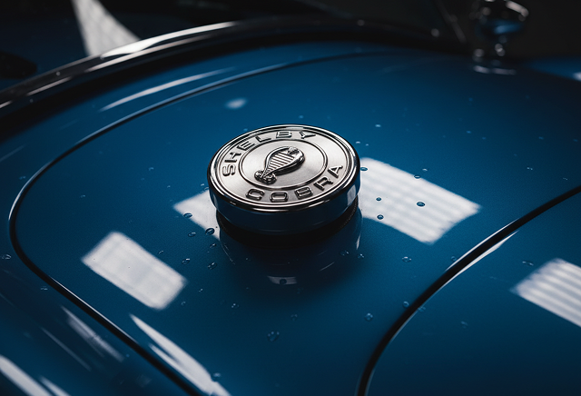
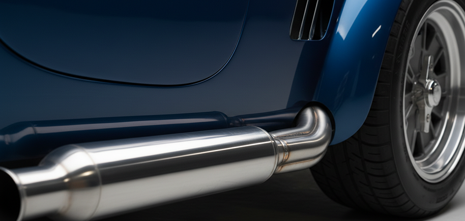
05 / Services
After it is yours.
The sale is the short part. Both of these sit under one heading in the navigation because a Cobra needs them from the same people.
-
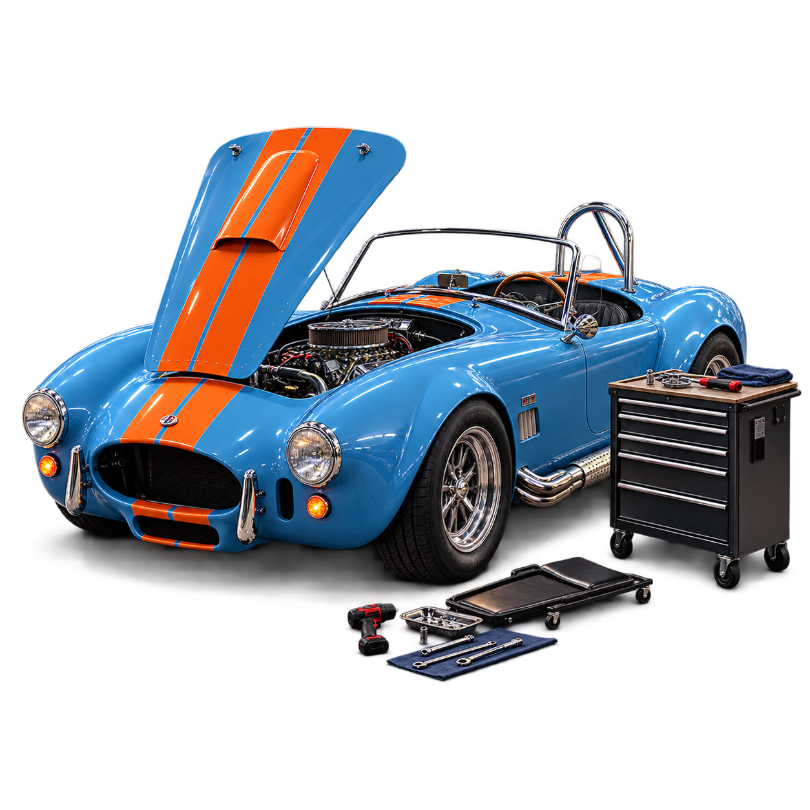
Book service01
Tune-up and service
These are not cars a general workshop sees twice a year. Setup, carburetion, cooling, brakes and the annual going-over, done by people with your car's own build sheet open in front of them.
-
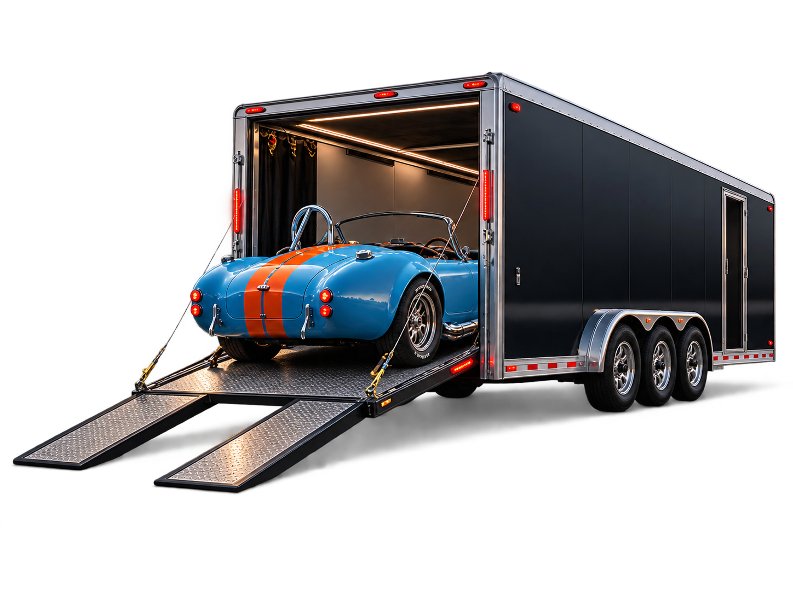
Arrange transport02
Transportation
Enclosed transport to the shop, to an event, or to a new owner. The car does not arrive on an open trailer behind somebody's pickup.
06 / News and events
News and events.
Read all news-
A Corvette Grand Sport just sold for $18.7m — and it exists because of the Cobra.
Chassis 003 took the Corvette record at RM Sotheby’s in Monterey, at more than twice the previous one. Five were built, three of them coupes. Zora Arkus-Duntov drew it as an answer to Shelby’s car and against a GM racing ban: a tubular chassis at around 1,900 lb and an aluminium 377 making north of 600 hp.
Read the story -
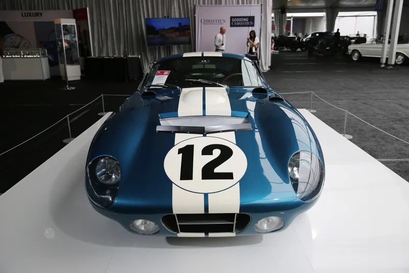
The Daytona Coupe took $42.9m and the American record with it.
Carroll Shelby’s own 1964 Daytona Coupe is now the most expensive American car ever sold at auction. Six were built to beat Ferrari at Le Mans, and in 1965 they did.
-
AC has built the Cobra again, and this is the production car.
AC announced the revival in December 2022 and has now shown the finished version: Ford-powered again, assembled in Sweden, sold into global markets. The car Shelby turned into a track weapon is back in series production for the first time in sixty years.
07 / Consignment
Already have one.
If the car is going to change hands, it is worth it changing hands properly — photographed the way it deserves, described accurately, and shown to people who already know what they are looking at.
Talk about consigning08 / Reviews
In their words.
-
01
“They talked me out of the spec I came in with. Took an hour, cost them the upsell, and the car is better for it.”
Dale W. · Cedar Rapids, IA
RT4 Classic Edition -
02
“Second one from these guys. First one still runs the way it did the day it left.”
Marcus B. · Rockford, IL
RT4B Black Edition -
03
“I have bought cars from dealers who could not tell me what was under the hood. Here they had the build sheet open before I finished the question, and every part on it had a reason. The whole thing took nine months and I knew where it was every week of them.”
Ken H. · Eau Claire, WI
RT4 Classic Edition -
04
“The side pipes are loud, which is to say correct. Nine months from deposit to keys, and it landed on schedule.”
Ray T. · Des Moines, IA
RT4B Black Edition
@midwestcobras
Live from the shop.